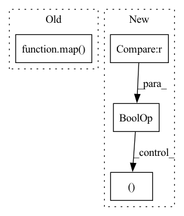

Pattern ID :9466

Before Change
i, j = q.shape[-2], k.shape[-2]
causal_mask = torch.ones(i, j, device = q.device, dtype = torch.bool).triu(j - i + 1)
causal_mask_chunks = causal_mask.split(q_bucket_size, dim = 0)
causal_mask_chunks = list(map(lambda t: t.split(k_bucket_size, dim = -1), causal_mask_chunks))
if exists(attn_bias):
i, j = attn_bias.shape[-2:]
After Change
q_start_index = q_index * q_bucket_size
k_start_index = k_index * k_bucket_size
if causal and k_start_index > (q_start_index + q_chunk.shape[-2] - 1):
// if chunk is to be all masked out causally, skip
continue
attn_bias_chunk = attn_bias_chunks[q_index][k_index] if exists(attn_bias) else None
exp_weight_chunk, weighted_value_chunk, weight_max_chunk = summarize_qkv_fn(
q_chunk,
k_chunk,
v_chunk,
mask_chunk,
attn_bias_chunk,
causal,
(q_start_index, k_start_index)
)
exp_weights.append(exp_weight_chunk)
In pattern: SUPERPATTERN
Frequency: 3
Non-data size: 4
Instances
Fragment ID: 33815531
Project Name: lucidrains/memory-efficient-attention-pytorch
Commit Name: 4be82443e060be7224be5e8247c097fcc84aa72d
Time: 2022-03-20
Author: lucidrains@gmail.com
File Name: memory_efficient_attention_pytorch/memory_efficient_attention.py
M Class Name: AnonimousClass
N Class Name: AnonimousClass
M Method Name: memory_efficient_attention(9)
N Method Name: memory_efficient_attention(9)
M Parent Class:
N Parent Class:
M File Name: memory_efficient_attention_pytorch/memory_efficient_attention.py
N File Name: memory_efficient_attention_pytorch/memory_efficient_attention.py
M Start Line: 87
M End Line: 136
N Start Line: 114
N End Line: 136
'>
Before Change
i, j = q.shape[-2], k.shape[-2]
causal_mask = torch.ones(i, j, device = q.device, dtype = torch.bool).triu(j - i + 1)
causal_mask_chunks = causal_mask.split(q_bucket_size, dim = 0)
causal_mask_chunks = list(map(lambda t: t.split(k_bucket_size, dim = -1), causal_mask_chunks))
if exists(attn_bias):
i, j = attn_bias.shape[-2:]
After Change
for k_index, (k_chunk, v_chunk, mask_chunk) in enumerate(zip(k_chunks, v_chunks, mask_chunks)):
k_start_index = k_index * k_bucket_size
if causal and k_start_index > (q_start_index + q_chunk.shape[-2] - 1):
// if chunk is to be all masked out causally, skip
continue
attn_bias_chunk = attn_bias_chunks[q_index][k_index] if exists(attn_bias) else None
exp_weight_chunk, weighted_value_chunk = summarize_qkv_fn(
q_chunk,
k_chunk,
v_chunk,
mask_chunk,
attn_bias_chunk,
causal,
(q_start_index, k_start_index)
)
exp_weights.append(exp_weight_chunk)
'>
Fragment ID: 33815530
Project Name: lucidrains/memory-efficient-attention-pytorch
Commit Name: 4be82443e060be7224be5e8247c097fcc84aa72d
Time: 2022-03-20
Author: lucidrains@gmail.com
File Name: memory_efficient_attention_pytorch/memory_efficient_cosine_sim_attention.py
M Class Name: AnonimousClass
N Class Name: AnonimousClass
M Method Name: numerically_unstable_memory_efficient_attention(9)
N Method Name: numerically_unstable_memory_efficient_attention(9)
M Parent Class:
N Parent Class:
M File Name: memory_efficient_attention_pytorch/memory_efficient_cosine_sim_attention.py
N File Name: memory_efficient_attention_pytorch/memory_efficient_cosine_sim_attention.py
M Start Line: 94
M End Line: 128
N Start Line: 107
N End Line: 128
'>
Before Change
self.blocks = nn.ModuleList([ReversibleBlock(f, g) for (f, g) in blocks])
def forward(self, x, arg_route = (True, True), **kwargs):
f_args, g_args = map(lambda route: kwargs if route else {}, arg_route)
block_kwargs = {"f_args": f_args, "g_args": g_args}
return _ReversibleFunction.apply(x, self.blocks, block_kwargs)
After Change
layers_and_args = list(zip(blocks, args))
if self.training and self.layer_dropout > 0:
layers_and_args = layer_drop(layers_and_args, self.layer_dropout)
blocks, args = map(lambda ind: list(map(itemgetter(ind), layers_and_args)), (0, 1))
out = _ReversibleFunction.apply(x, blocks, args)
return torch.stack(out.chunk(2, dim=-1)).sum(dim=0)
'>
Fragment ID: 33815529
Project Name: lucidrains/linear-attention-transformer
Commit Name: fa23ce09a98a63d26116e3935ad5902cf705255d
Time: 2020-06-04
Author: lucidrains@gmail.com
File Name: linear_attention_transformer/reversible.py
M Class Name: ReversibleSequence
N Class Name: ReversibleSequence
M Method Name: forward(2)
N Method Name: forward(3)
M Parent Class: nn.Module
N Parent Class: nn.Module
M File Name: linear_attention_transformer/reversible.py
N File Name: linear_attention_transformer/reversible.py
M Start Line: 118
M End Line: 121
N Start Line: 161
N End Line: 174